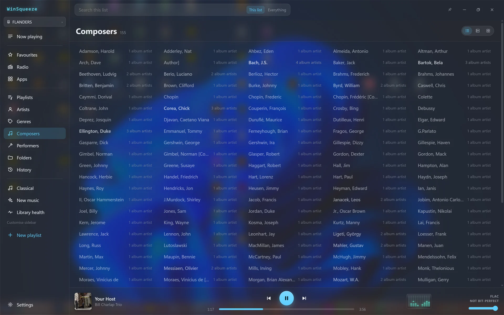
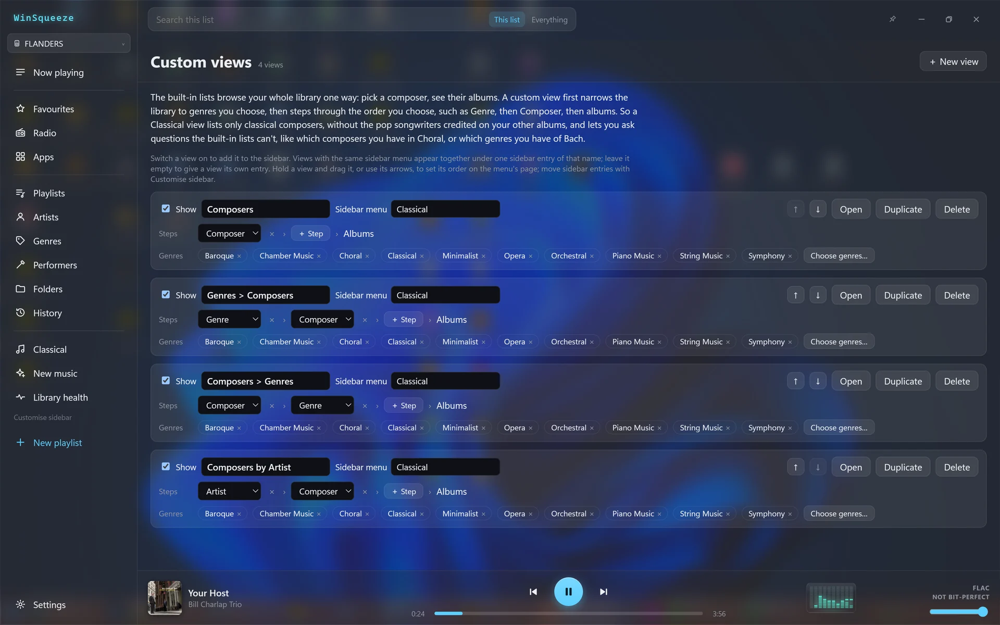
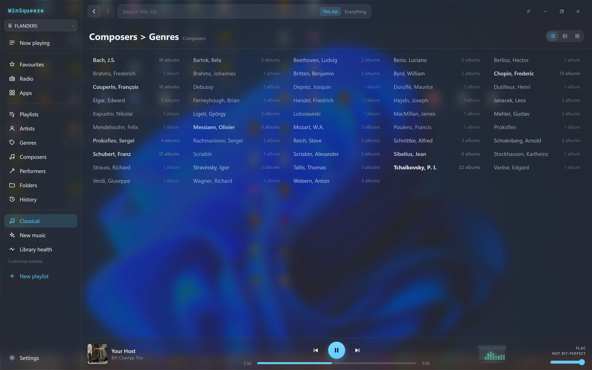
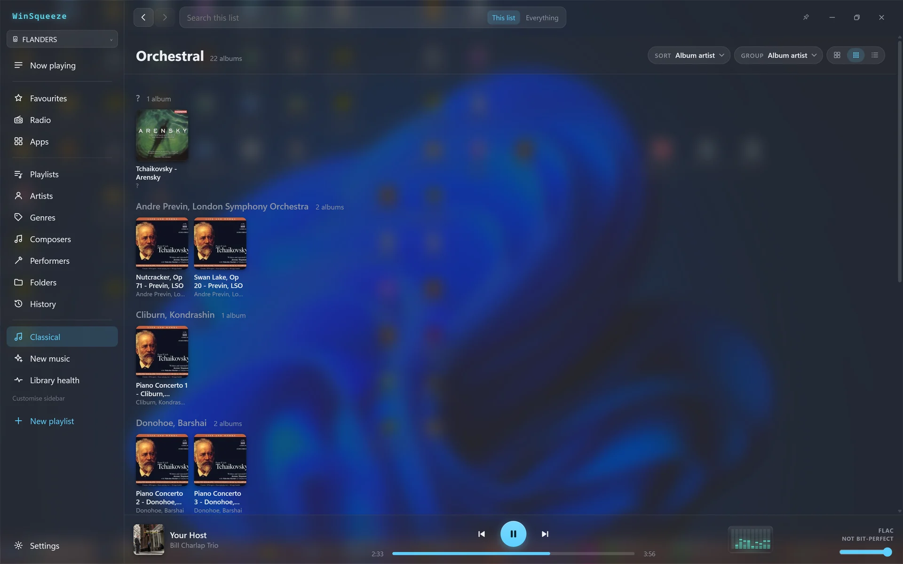
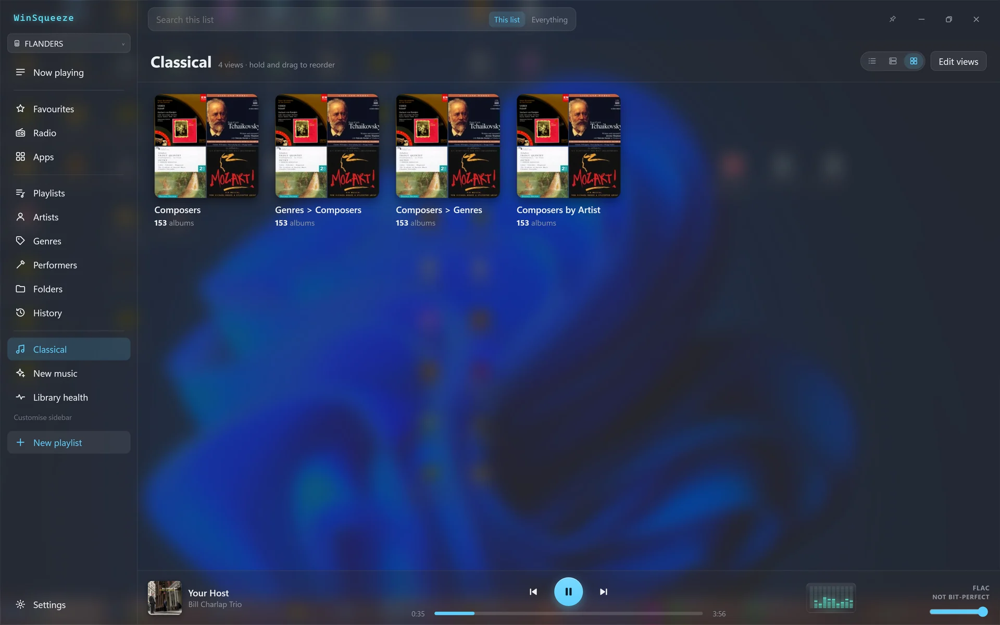

Custom views
Browse part of your library your own way. Here’s the example they were built for: classical music.
Too many composers
Composer tags aren’t only on classical albums. Jazz, pop and rock tracks often credit their songwriters too. So the plain Composers list mixes Bach and Chopin with Gershwin, Lennon and Monk: 155 composers here, and picking one often won’t take you to classical music.

Restrict it to the genres that mean classical
A custom view first narrows the library to genres you choose. Mine are Baroque, Chamber Music, Choral, Classical, Minimalist, Opera, Orchestral, Piano Music, String Music and Symphony. Then pick the steps: Composer then albums, Genre then Composer, Composer then Genre, or the performing Artist then Composer.

Just the real composers
The same composers, restricted to those genres: 48 of them, each with its number of albums. Pick one and you get their music.

Then down to the music
Pick a composer, then a genre: here, all the orchestral works I have by Tchaikovsky, 22 albums grouped by performer. Go back a step to see his other genres, like chamber music or opera.

All under one sidebar entry
Give views the same sidebar menu name and they sit together under one entry. Here all four live under Classical.
